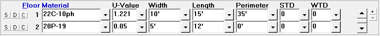

Floors (Room Data, Default Room Data Windows) |
  
|
Floors (Room Data, Default Room Data Windows) |
|

S Button (Save Material to Default Room): Saves the material to the Default Room Data window. If the material is already in the list of default materials it will be updated if needed.
D Button (Insert Default Material): Copies the default material from the Default Room Data window to the Room Data window. If more than one default material has been defined, a popup menu will let you select which of your default materials to copy. For row 1, this button works like the Copy Above or Default and Room Dimension menu item and toolbar button, while on rows 2 and up it works like the Insert Only Default Room Data menu item and toolbar button.
C Button (Copy Above Material): Copies the material from the above row. This button is disabled for material number 1. For rows 2 and up, works the same as the Copy Above or Default and Room Dimension menu item and toolbar button.
Floor Material: This entry corresponds to the six types of floors allowed by Manual J. Click on the drop-down list arrow to open the Floor Material dialog. Note that when you select or type a valid floor construction code, the Width and Length fields become the width and length of the room (only if they had been blank).
U-Value: If you enter one of the standard construction codes and floor types Rhvac will display a suggested U-Value. This U-Value corresponds to the U-Values listed in Table 2 (page 70) of Manual J. Note that if the summer U-Value is different from the winter U-Value, only the winter U-Value will be used. You also have the option of entering your own U-Value. Rhvac will then use the U-Value you entered when calculating the heat transfer due to the floor. Note that the U-Value is determined by dividing the number 1 by the R-value.
Width and Length: The width and length of the floor should correspond to the area of the floor that is exposed to an unconditioned space (either the ground, a basement, or an open crawl space). In cases where the floor is not rectangular and it is not possible to give a single length and width, you should consider entering the length as 1 foot and the width as the actual area. The main point to remember is that the product of the floor length and width entries should be equal to the actual floor area exposed to an unconditioned space.
Note: The room area corresponds to the total conditioned area of the room while the floor area corresponds to the total area of floor that has an unconditioned space beneath it. Therefore, it is entirely possible for the floor area entered here to be substantially different from the room area entered above. (The room, not floor area, is used when determining check figures such as the square foot per ton, and CFM per square foot).
Perimeter: This value is only used if you specify a floor type 22 or 23 - concrete slab on grade, and can be 0.0 to 999.9 feet long. So if the floor of a room is NOT concrete slab on grade, you should leave the perimeter as zero. The perimeter value is needed for concrete slab on grade type floors because such floors lose heat through the perimeter and not through the center. So the perimeter of the floor in feet will be used when determining the heating load due to the floor. Note that the heat gain (cooling load) through such a floor will always be zero.
STD, WTD: The floor Summer Temperature Difference (STD) and Winter Temperature Difference (WTD) inputs are only for situations where you have a floor over an unconditioned space and you do not want it to be treated like any of the conventional floor types. If you enter a value greater than zero here, the program will treat the floor in the same way that it does a partition wall, where it will determine the loss or gain by multiplying the u-factor times the area times the TD value you enter.
Note that if you enter a number greater than zero for either the STD or WTD, the floor will automatically be treated as a partition for both the heating and cooling load calculations.
Scrollbar: Use the scrollbar to scroll up and down through the list of floors for the room.
Plus and Minus Buttons: Click the plus and minus buttons to increase or decrease the number of floors visible at a time.